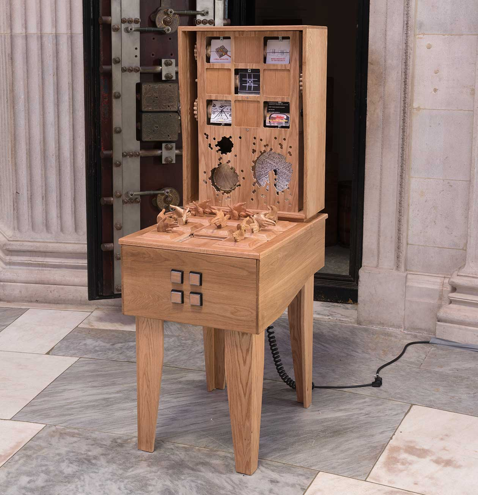

Second Amendment
A well regulated Militia, being necessary to the security of a free State, the right of the people to keep and bear Arms, shall not be infringed.
Andy Malone
Standoff, 2022
Wooden puzzle with mechanisms
23 inches by 31 inches by 66 inches
Artist Commentary
Standoff is a physical combination puzzle that can be solved by sliding eight tiles into the correct configuration. Each tile features two carved fingers pointed in a “gun hand” pose. The player manipulates the tiles so the fingers are pointed at each other, creating a balance, or a standoff. This represents my ideal interpretation of the Second Amendment: a means to create equilibrium.
Once the puzzle is solved, buttons on the front of the table are activated and may be pressed to trigger mechanical movements in the back box. These movements serve as a commentary on American gun culture, evoking the complicated legacy of the Second Amendment. Before a player leaves the table, the puzzle should be scrambled for the next player.
I approached this project by first examining the idealistic notions behind the Second Amendment and then juxtaposing them with reflections on the impact of modern gun culture.
A standoff is a form of equilibrium.
The Second Amendment was included in the Bill of Rights to protect the right of American citizens to legally own and use firearms. The founders correlated “arms” with perseverance and independence. The Second Amendment renders any prohibitive regulations on arms unconstitutional. For early Americans, being armed was a way to maintain equilibrium between the people and entities that might do them harm, be it criminals, wildlife, an invading army, or municipal overreach. In this utopian vision, the right to bear arms maintains a level playing field.
A standoff only occurs if both sides are balanced.
In Standoff, the ideal interpretation of the “right to bear arms” is abstracted in a sliding puzzle. Each of the sliding tiles incorporates carved hands pointed in the “gun pose,” an almost universally understood gesture. To solve the puzzle, the viewer must manipulate the tiles so that the fingers all point at each other, thus creating a counterbalance, or a standoff.
A standoff is the uneasy peace created by the threat of mutually assured destruction.
Once the puzzle is complete, motorized mechanisms can be activated by pushing buttons on the front of the cabinet, a bridge between theory and actuality. The abstracted simplicity gives way to a complicated legacy of racism, classism, and cruelty. One of the mechanisms features an accidental musical composition entitled “Aversion Therapy,” which addresses my personal relationship with firearms.
A standoff is a contest in which there is no winner.
Standoff is about appreciating the spirit of the Second Amendment while despising gun violence. It is about reconciling American mythology with American brutality.
Huge thanks to Jeff Smith (SmithMade), Brian Covington (Proto Cast Inc.), Niko Solomos (Display Group), Ed O’Toole (George P. Johnson), Wendy Marvel (FlipBooKit), David Smiertka, Brad Litwin, and JP Kelly for their fabrication support and expertise. I would also like to send love to my wife, Elaine, and my children, Julia and Martin, for their patience, encouragement, and inspiration.
Curator Commentary
One working mental model of how, exactly, guns work is based on the loading of a revolver: someone loads six bullets into the cylinder, holds the gun by the handle, gives it a flick to spin the cylinder, then a flick in the other direction to reseat the cylinder in the frame, points the barrel toward the target, and pulls the trigger, which releases the hammer, which in turn pushes a bullet out of the cylinder, through the barrel, and toward the target. Or maybe your understanding comes from a more contemporary gun with a magazine: bullets are one by one fed into a clip, which is in turn seated in the handle, enabling each bullet to be propelled into the cylinder for firing.
The simplicity of these mechanical devices frames how we think all guns work, more or less. Guns, in other words, are yet another deadly “black box” in our lives, the complexity of which is masked by the simplistic model we use to understand them. This is a predicament of our post-mechanical, post-information world: we have made machines to augment us, to make us faster, smarter, more powerful. But do these machines pull this off? Do they pull this off in ways that better our lives and that don’t make them worse? Do these black boxes enhance both the good and the bad in the human condition?
Andy Malone’s Standoff presents a literal and figurative Rube Goldberg-meets-slide-puzzle conception of the goings-on inside a gun and within the consequences of eight gun-wielding people. Players slide the puzzle pieces seeking the correct configuration of pointing fingers. The pointing-finger-mounted puzzle squares in turn trigger gears, levers, and pistons in order to enact mechanical and social tensions that lead to the brandishing of these violent black boxes. The mechanical complexity of the work nods to both the absurdity of machines holding such sway over us and the inevitability that black boxes, once in existence, seem unstoppable.
When certain conditions are met, and the puzzle pieces are in the right order, the work strikes a chord—once more, literally and figuratively. The sharp strike of a fired gun makes real the power of the black box, unmasking its violent purpose. Even for those keen on guns, this sound is too much. Protective devices shield the shooter from this striking reality. This sound is the most literal aspect of Standoff, bringing us back from the mechanical wonder of Malone’s craft skills to the jarring reality of these black boxes that augment humanity’s violent instincts.
Andy Malone holds a Bachelor of Architecture degree from the University of Detroit Mercy, and has worked in the exhibit design and custom furniture industry for over 25 years. Notable clients include Google, Twitch, Konami, Salesforce, Dolby, LG, Dodge, HP, T-Mobile, and Bethesda Games. His playable sculptures and games have been shown in over 75 exhibitions since 1995, including two recent solo exhibitions: Play Room (2017) and Happy Accidents (2019). As a curator of game arts, Malone co-organized Game Show Detroit (2006) at the Contemporary Art Institute of Detroit and Game Show NYC (2011) at Columbia University. Malone also curated the Bravo! Bravo! Art Exhibition at the Detroit Opera House in 2004 and 2005. Malone currently serves as Vice President of HATCH, an interdisciplinary arts center in Hamtramck, Michigan.
1
Freedom of Religion, Speech, Press, Assembly, Petition
Congress shall make no law respecting an establishment of religion, or prohibiting the free exercise thereof; or abridging the freedom of speech, or of the press; or the right of the people peaceably to assemble, and to petition the Government for a redress of grievances.
2
The Right to Bear Arms
A well regulated Militia, being necessary to the security of a free State, the right of the people to keep and bear Arms, shall not be infringed.
3
The Housing of Soldiers
No Soldier shall, in time of peace be quartered in any house, without the consent of the Owner, nor in time of war, but in a manner to be prescribed by law.
4
Unreasonable Search and Seizure, Warrants, Probable Cause
The right of the people to be secure in their persons, houses, papers, and effects, against unreasonable searches and seizures, shall not be violated, and no Warrants shall issue, but upon probable cause, supported by Oath or affirmation, and particularly describing the place to be searched, and the persons or things to be seized.
5
Due Process, Self-Incrimination, Eminent Domain
No person shall be held to answer for a capital, or otherwise infamous crime, unless on a presentment or indictment of a Grand Jury, except in cases arising in the land or naval forces, or in the Militia, when in actual service in time of War or public danger; nor shall any person be subject for the same offence to be twice put in jeopardy of life or limb; nor shall be compelled in any criminal case to be a witness against himself, nor be deprived of life, liberty, or property, without due process of law; nor shall private property be taken for public use, without just compensation.
6
Rights of Defendents in Criminal Trial
In all criminal prosecutions, the accused shall enjoy the right to a speedy and public trial, by an impartial jury of the State and district wherein the crime shall have been committed, which district shall have been previously ascertained by law, and to be informed of the nature and cause of the accusation; to be confronted with the witnesses against him; to have compulsory process for obtaining witnesses in his favor, and to have the Assistance of Counsel for his defense.
7
Rights in Civil Cases
In suits at common law, where the value in controversy shall exceed twenty dollars, the right of trial by jury shall be preserved, and no fact tried by a jury, shall be otherwise re-examined in any court of the United States, than according to the rules of the common law.
8
Excessive Bails, Fines, or Punishment
Excessive bail shall not be required, nor excessive fines imposed, nor cruel and unusual punishments inflicted.
9
Additional Fundamental Rights of People
The enumeration in the Constitution, of certain rights, shall not be construed to deny or disparage others retained by the people.
10
Separation of Powers and Federalism
The powers not delegated to the United States by the Constitution, nor prohibited by it to the States, are reserved to the States respectively, or to the people.